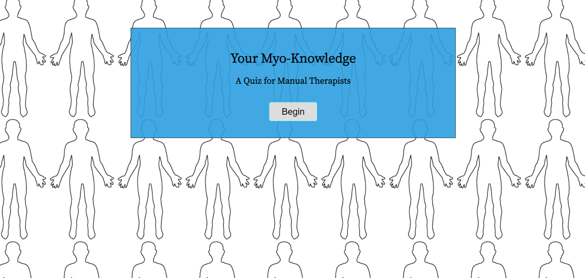

Hello my name is Kathryn. I am a full stack developer and a passionate, perennial student of all things code.
a little bit about me...
The foundational building of form and function that is code engineering inspires me to no end. I love sleuthing out problems and watching solutions come to life on the screen. What I find most satisfying is creating elegant functions that translate nicely in any scope, and getting creative with simple UX.
All things considered, I am a health & wellness enthusiast, a musician, and a believer in the good of humanity. I put a high value on communication, perception, and fluidity -the ability to flow and change, or get the flow moving when it isn’t! When I’m not at my computer you can find me outside communing with the natural world, creating collaborative art projects and events, and spending quality time with my loved ones.
Projects
Myo-Knowledge Quiz App
- Test your knowledge of muscles, movement, & injury rehabilitation with this quiz for manual therapists.
- Built with HTML, CSS, Javascript & jQuery